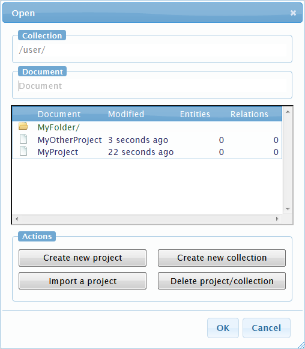
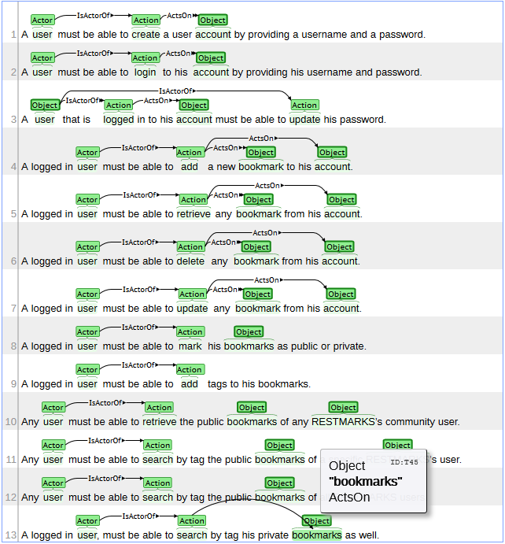
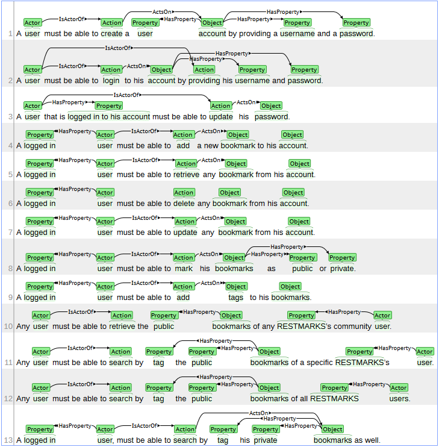
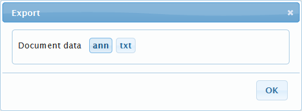

Supported browsers are Firefox, Chrome, Safari, and Internet Explorer. Firefox, however, is highly recommended.
The menu of the application is placed on top of the window. The buttons of the menu are:
Every user of the system has his/her own collection of documents. The system has no multi-user support in the sense that no more than one user can edit a document. In fact, each user can only create and edit/annotate documents in his/her own collection. Upon registering, the system creates a collection for the user, which can be accessed if he/she is logged in to the system.
Registering for an account is easy. Simply push the register button and fill in the form with your desired username and password. If the username exists, the system will prompt you to select a different one.
If you have a username and a password, you can login to the system by entering them in the login form.
The collection of the user is actually the uppermost folder that he/she can access. The "Collection" button on the left of the menu is used to open the collection at any time. In this folder, the user can create documents and folders using the respective buttons or access them by double-clicking on them. Additionally, the user can delete a folder or a document using the respective buttons.
The user can insert a new project by pressing the "Create new project" and inputting the project name and the requirements in the dedicated text fields. Furthermore, he/she can import a project with or without annotations upon pressing the "Import a project" button. The "Document" field is required but the "Annotations" field is optional.
Upon having created (or imported) a document, double-clicking on it opens it in the main visualization area. Then the user can place different annotations on the document. In specific, the tool supports the following types of annotations:
When the user has opened a project in the main area, he/she can perform automatic annotation on the project. Note that automatic annotation should be used only as a helpful complement. No guarantee is provided as to the quality of the annotations. As a result, the user has to review the annotations and add any missing ones.
As mentioned above, the user should refine the annotations provided by the automatic annotator. After that, there is no need to save any of the annotations. The system automatically saves any annotation the users perform, thus it is perfectly safe.
Exporting an annotated project is done by pressing the "Export" button. Then the user is presented with two options relevant to exporting the txt and the ann of the project. The "txt" option simply exports the requirements of the project in text form. The "txt" option exports an ann file containing the annotations of the project.
Although your projects are perfectly safe on the server, it is recommended to also export them in txt and ann form in order to have a local copy of them. Importing a project is done as explained above using the import form. Note that you have to import both the txt and the ann file at the same time. In addition, during import, there should be no conflicts with other projects so you should use a project name that does not already exist in your collection.
You can find some examples here and you can also see the tool's requirements here.
S-Case Requirements Annotation Tool
© 2014 Aristotle University Of Thessaloniki